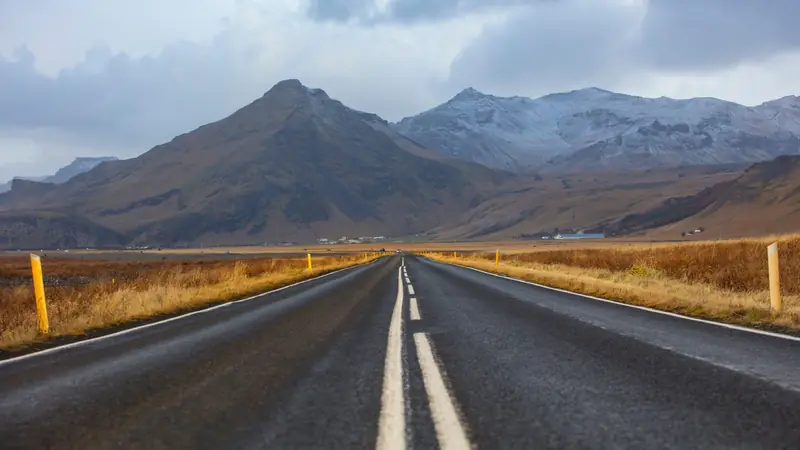
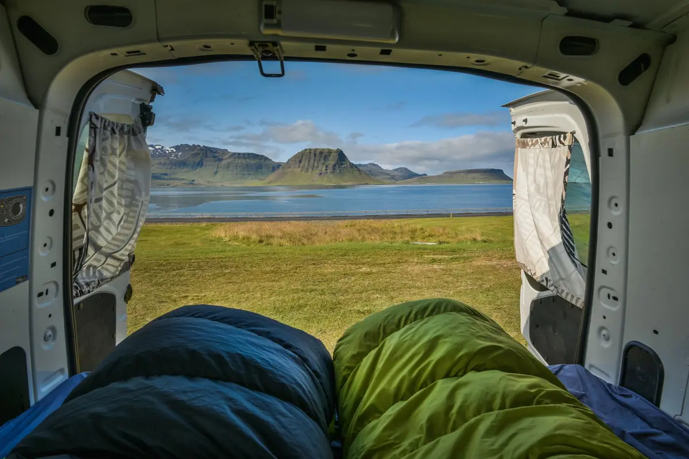

Budget & tips Iceland
Iceland's Ring Road without breaking the bank
Iceland is famously expensive. Here is how I drove the whole Ring Road in ten days and kept the costs down.


Iceland has a reputation for being one of the most expensive countries in Europe, and it is earned. A sandwich at a petrol station can cost more than a meal at home. But the things that make Iceland special, the waterfalls, glaciers and black beaches, are mostly free to see.
I drove the whole Ring Road in ten days on a strict budget. Here is what worked.
Sleep in what you drive
The biggest saving was a small camper van, which combined car hire and accommodation in one. Campsites are cheap, have hot showers and kitchens, and many of them have views that hotels would charge a fortune for.
Wild camping in a vehicle is not allowed in most places, so stick to official campsites. They are easy to find, and most do not need booking outside high summer.

Cook, do not buy
I bought food at the discount supermarkets in larger towns and cooked every evening. Pasta, rice, eggs and local skyr kept me going. I ate out twice in ten days and enjoyed both meals more for it.
Bring a refillable bottle. The tap water is excellent, and buying bottled water would be a waste of money.
Free things, and the one paid thing worth it
Most of the famous waterfalls and beaches are free, though many now charge a small parking fee. Hot springs and lagoons can be very expensive, so I used the local public swimming pools instead. They are cheap, warm and full of locals.
My one splurge was a guided glacier walk. You should never walk on a glacier without a guide, and it was the highlight of the trip.